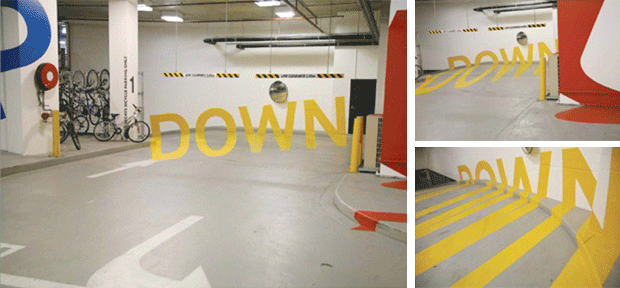

立体喷绘最近出现很多了，最初认识到这个东西应该是从足球比赛的转播上，球门后面的一些草地被绘成了广告，看上去像立起来的广告牌，实际是画在地上。从视觉上，它能创造出一种跃然于纸上的感觉，能够达到表现物从背景中分离出来的效果。能给人一种现实中的虚幻拼贴感。 慢慢我发现，立体喷绘的更有趣的意义不在绘制表现的内容上，而是在于观察点的位置。一个能看到最好效果的位置，是唯一的吗？当我们全神贯注去欣赏立 体喷绘的时候，另外一方面有意思的事情是，我们的位置是不是设计师寻找的，或者说引导的。这其实是一个很好的互动设计的过程，稍作修饰，就能做许多有意思 的户外互动的装置，比如说城市的景点，景观。 我想像人们在一个位置欣赏羡慕远处一个位置的东西的时候，并不意识到自己的位置本身有什么特别意味，而假如远处被我们欣赏的物体能够提醒我们这点，这就是所说的有意思的互动过程。我相信会有人和我想的一样。
